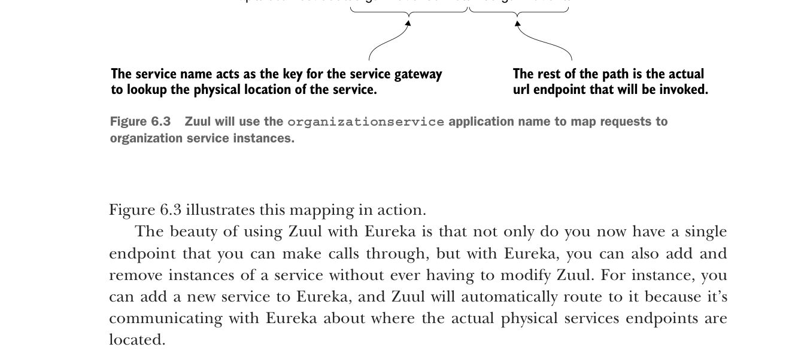

Hình 6.3 minh họa ánh xạ này trong thực tế.

Zuul sẽ dùng tên ứng dụng
organizationservice để ánh xạ các yêu cầu tới các instance dịch vụ organization.Điểm hay khi dùng Zuul với Eureka là bạn không chỉ có một endpoint duy nhất để thực hiện các cuộc gọi, mà với Eureka, bạn cũng có thể thêm và gỡ các instance của một dịch vụ mà không cần sửa Zuul. Ví dụ, bạn có thể thêm dịch vụ mới vào Eureka, và Zuul sẽ tự động định tuyến tới dịch vụ đó vì nó giao tiếp với Eureka về vị trí các endpoint dịch vụ vật lý thực tế.
Nếu bạn muốn xem các route do máy chủ Zuul quản lý, bạn có thể truy cập các route qua endpoint /routes trên máy chủ Zuul. Thao tác này sẽ trả về danh sách tất cả ánh xạ trên dịch vụ của bạn. Hình 6.4 cho thấy kết quả khi gọi http://localhost:5555/routes.
Trong hình 6.4, các ánh xạ cho các dịch vụ đã đăng ký với Zuul được hiển thị ở phía bên trái của thân JSON trả về từ các cuộc gọi /route. Các Eureka service ID thực tế mà các route ánh xạ tới được hiển thị ở bên phải.